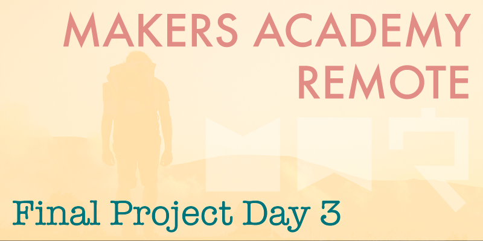

Day three of our final project has been very long and very trying. The honeymoon period is definitely over, and today we were faced with the stark reality of the sheer scale of our project, and unexpectedly some very vocal disagreements about how best to structure our code.
Spiking
Early this morning we finished work on the mockups. Throughout the course we've been taught to follow Test Driven Development practices, which means that we don't usually write a single line of production code without having first written a failing test for that code. However we started today with something called spiking, which is perfectly permissable. Spiking is simply the art of coding quickly without writing or even thinking about tests. The idea behind spiking is to rapidly construct a prototype, then once that prototype is as complete as necessary, to start again from scratch in a test driven manner, aided by the knowledge gained during spiking.
By spiking the basic structure of our project we discovered some issues relating to user account creation which would need addressing early on. However various members of our group had conflicting opinions as to how we should address those issues, and in my opinion far too much time was spent debating the benefits of either position without making any real progress. While it's very important to discuss disagreements within the team, it's definitely possible, especially during such a short project, to spend far too long debating, when effectively whichever route is selected would be more productive than simply debating both for such a long time.
Pairing
For most of the day we've 'mob' worked as a group of four, however in the afternoon we broke into our first pair coding sessions of this project, with one pair developing the user account and profile creation code, and the other pair building the road trip model and its various properties. After two and a half days of working as a group of four it felt good to break into pairs, and very productive too.
By the end of today we've managed to spike both the user account creation and the road trip creation, both of which are major features of our project. Today's spiking will assist us a great deal when it comes to building Roadtripper from scratch in a TDD fashion tomorrow, and hopefully we can progress without any further disagreement.